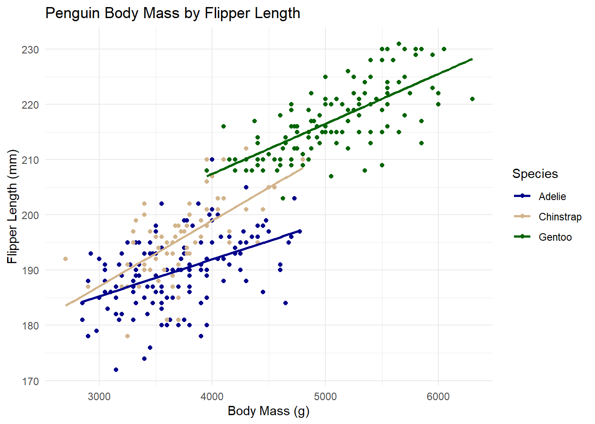

# install packages if not already
# install.packages(c("palmerpenguins", "janitor", "tidyverse", "targets"))
# load packages
library("targets")
library("palmerpenguins") # penguin data
library("janitor") # cleaning column names
library("tidyverse") # collection of data processing packages
library("knitr") # nice table output
# read data
penguins <- palmerpenguins::penguinsData Pipelines with {targets}
Reproducible Pipelines
Automation
An R package for creating efficient, reproducible workflows
If you’re reading this post, chances are you’re familiar with the process of collecting, cleaning, and analyzing data. You’re probably also familiar with that dreaded moment—discovering an error (or receiving critical feedback from a supervisor) right at the finish line, forcing you to go aaalllllll the way back and re-run your entire time and energy intensive workflow.
Worse yet, your pipeline has grown so cluttered and poorly documented from rushed, repeated fixes and edits that you’re no longer sure which parts of your code are still relevant. The result? A frustrating, tangled mess. Fortunately, there’s an R package designed to break this loop and make your work as an analyst, developer, or scientist far more efficient and enjoyable. It’s called targets (Landau 2021).
What is {targets}?
targets is an R package that helps organize, structure, and track the components of an analytical pipeline, making it more reproducible, scalable, and robust. It monitors the code and outputs of each step (or “target”) in your workflow to ensure they stay up to date when something changes—and, more importantly, to avoid rerunning steps that haven’t changed. This speeds up your analysis by only re-running code that has been modified (and its downstream dependencies). targets also flags steps that have changed but haven’t yet been executed, so you know exactly where to focus your attention in a pipeline. It encourages efficient, clean, and function-oriented code. While it may take a bit more effort to set up at first, the payoff in saved time and reduced frustration is well worth it.
I sort of see it as The Eye of Sauron from JRR Tolkien’s The Lord of the Rings. Sauron (the targets package) is ceaselessly scouring Middle Earth (your pipeline) with an everlasting, burning desire to find the One Ring (changes in your code) so that he can resume full power (update your code). The Great Eye sees all!
A simple analysis
Let’s run through a simple analysis using {palmerpenguins} package data without targets so we can later apply it and see the magic. Maybe we are interested in seeing if penguin flipper length can be predicted by other physical characteristics of the animal. Here is a short workflow on how one might approach this analysis.
Set Up
We start by installing and loading the necessary packages and reading in the data.
Wrangling data
Its critical to clean up and inspect the data prior to analysis. Fortunately for this simple example, palmerpenguins data is relatively clean already. Lets just touch up and filter some of those column names.
penguins_mod <- penguins |> # raw data
clean_names() |> # make columns lower case and remove spaces
mutate(name = word(species, 1)) |> # add a species name column
select(name, island, flipper_length_mm, body_mass_g, bill_length_mm, sex)Exploratory data analysis
Before conducting any modeling, you should thoroughly check the data quality, assumptions, and underlying patterns and outliers. There is no single way on how to perform exploratory data analysis as it is subjective to the data in hand and the question being asked.
For simplicity, We will just inspect a possible linear relationship between body mass and flipper length by species.
# visualizing relationship of body mass and flipper length of penguins
ggplot(
data = penguins_mod,
aes(x = body_mass_g, y = flipper_length_mm, color = name)
) +
geom_point() + # add data points
geom_smooth(method = "lm", se = FALSE) + # Add trend lines for each species
labs(
y = "Flipper Length (mm)",
x = "Body Mass (g)",
title = "Penguin Body Mass by Flipper Length",
color = "Species"
) +
scale_color_manual(
# changing colors
values = c(
"Adelie" = "blue4",
"Chinstrap" = "tan",
"Gentoo" = "darkgreen"
)
) +
theme_minimal() # minimal appearance
Modeling
The plot suggested a potential linear relationship between flipper length and body mass, varying by species. There are many possible models and explanatory variables we could explore to better understand this relationship. For now, let’s start with a simple ordinary least squares (OLS) linear regression model to examine if and how body mass, species, and sex influence the flipper length of penguins.
# fitting a linear regression model
m1 <- lm(flipper_length_mm ~ body_mass_g + name + sex, data = penguins_mod)Results
We should create a summary table of model coefficients to help contextualize statistical significance and effect of of predictor variables. We’ll also inspect the R-squared value as an estimate of overall model fit.
# model coefficients
summary(m1)$coefficients |>
as.data.frame() |>
mutate(across(where(is.numeric), ~ round(., 3))) |>
knitr::kable()| Estimate | Std. Error | t value | Pr(>|t|) | |
|---|---|---|---|---|
| (Intercept) | 164.589 | 3.184 | 51.699 | 0.000 |
| body_mass_g | 0.007 | 0.001 | 7.037 | 0.000 |
| nameChinstrap | 5.544 | 0.785 | 7.061 | 0.000 |
| nameGentoo | 18.021 | 1.442 | 12.493 | 0.000 |
| sexmale | 2.478 | 0.854 | 2.901 | 0.004 |
# model r squared
summary(m1)$r.squared %>%
round(2)[1] 0.86And there you have it! A simple analysis of penguin data in R. Not too complicated, right? Why use targets?
Imagine your supervisor asks you to investigate three different hypotheses using much larger datasets and a suite of machine learning models to identify the best predictors. Your exploratory data analysis becomes far more exhaustive, your models take minutes, hours, or even days to run, and your scripts grow increasingly difficult to manage. On top of that, you’re expected to write a report that will be scrutinized and sent back with edits—meaning you’ll have to re-run the entire process all over again. targets helps you manage this process with ease!
Using {targets}
Lets run through our pipeline again but applying targets this time.
1. Function-orient your workflow
A key programming best practice is to break your workflow into individual, customized functions. Functions make your code reusable, easier to modify, and more scalable—much more efficient than copying and pasting code repeatedly.
To get started, let’s create a folder named R in the root directory (the main folder where your project’s code lives). Inside that folder, we will create a script called functions.R where we will store all our custom functions.
dir.create("R") # creating an R folder in your working directory
file.create("R/functions.R") # adding a functions scriptOnce inside this functions.R script, we will translate our original pipeline into a set of individual functions:
# pull penguin data
pull_data <- function() {
return(palmerpenguins::penguins)
}
# cleaning and wrangling data
clean_data <- function(data) {
data |> # raw data
janitor::clean_names() |> # lower case columns
mutate(name = stringr::word(species, 1)) |> # species name column
dplyr::select(name, island, flipper_length_mm, body_mass_g, sex) # selecting variables
}
# plot data
plot_data <- function(data) {
ggplot(
data = data,
aes(x = body_mass_g, y = flipper_length_mm, color = name)
) +
geom_point() + # add data points
geom_smooth(method = "lm", se = FALSE) + # Add trend lines for each species
labs(
y = "Flipper Length (mm)",
x = "Body Mass (g)",
title = "Penguin Body Mass by Flipper Length",
color = "Species"
) +
scale_color_manual(
# changing colors
values = c(
"Adelie" = "blue4",
"Chinstrap" = "tan",
"Gentoo" = "darkgreen"
)
) +
theme_minimal() # minimal appearance
}
# fit model
fit_model <- function(data) {
lm(flipper_length_mm ~ body_mass_g + name + sex, data)
}
# model coefficients
model_coefs <- function(model) {
summary(model)$coefficients |>
as.data.frame() |>
mutate(across(where(is.numeric), ~ round(., 3))) |>
knitr::kable()
}
# model r squared
model_r2 <- function(model) {
summary(model)$r.squared
}2. Create the {targets} skeleton
Now that our workflow is neatly packaged into individual functions it is time to create the backbone of our pipeline, a _targets.R script.
You first need to run:
use_targets()This will create a _targets.R file in your working directory. The file comes pre-populated with commented instructions and example code, many of which are irrelevant or optional for our example. Important: Delete the example target code inside script before proceeding.
You should then fill the file with the following structure:
# _targets.R file
# Load packages required to define the pipeline:
library(targets)
# Run the R scripts in the R/ folder with your custom functions:
tar_source()
# Set target options:
tar_option_set(packages = c("tidyverse", "palmerpenguins", "janitor", "knitr")) # load packages
# Here is where we define our targets using our custom functions
list(
tar_target(data, pull_data()),
tar_target(data_c, clean_data(data)),
tar_target(plot, plot_data(data_c)),
tar_target(model, fit_model(data_c)),
tar_target(coefs, model_coefs(model)),
tar_target(r2, model_r2(model))
)This part can feel a little confusing, so let’s take it step by step.
First, load the package with library(targets) (we need the package to be loaded before using any of its functions). Then, use tar_source() to load all the functions from your functions.R script. Next, use tar_option_set() to load any packages your pipeline or functions depend on. Finally, define your pipeline using list() with individual tar_target() calls.
Each tar_target() has two main parts:
The name we are assigning to the target object
The code used to generate it, often a function that may use upstream targets as inputs
Still confused? That’s okay—let’s break down an example.
tar_target(data, data_pull())This tells {targets} to create a target called data using the data_pull() function we wrote earlier (which loads the penguins dataset).
Lets look at the next one:
tar_target(data_c, clean_data(data))This creates a new target called data_c using the clean_data() function—with the data target as its input. In other words, we used the data target inside a function to create a new target (data_c). Cool, right? That’s the basic pattern we’ll follow for the rest of the pipeline.
3. Running {targets}
Lets look at our targets pipeline
targets::tar_visnetwork() # visualize our targets networktar_source() only sources R scripts. Ignoring non-R files: R/.DS_Store{targets} doesn’t just track dependencies—it also lets you visualize them and see which parts of your pipeline are related or out of date. In the visualization, functions appear as triangles, targets appear as circles, and arrows show relationships between them. If a target is blue, it means it’s outdated—either because its own code changed or because an upstream relative changed.
We have built our pipeline but we haven’t run it, so it makes sense that everything is outdated. Let’s run it:
tar_make() # running our targets pipelineAnd to visualize the update:
tar_visnetwork()tar_source() only sources R scripts. Ignoring non-R files: R/.DS_StoreAt this point, all of your target objects are up to date and reflected in the visual network (changed from blue ot green). To test this, try running tar_make() again. You should see the message: “skipped pipeline”, indicating that nothing has changed and no targets need to be rebuilt.
Each target is stored as an internal object managed by the package and won’t appear in your global environment like regular R objects. To access a specific target, you can load it into your environment using tar_load() (you can also return the target value with tar_read()).
tar_load(data) # load the target data
tar_load(plot) # load the target plot
tar_load(coefs) # load the target model coefficients table4. Updating {targets}
So you ran your entire workflow using {targets}, wrote up some preliminary results, showed your boss, and she says: “Hey, I thought I asked you to put bill length as one of the model predictors in there. Can you go back and add that in there?” This would not be a big deal with such a small analysis such as this one. But, as you know, your analysis can become very large and difficult to track, re-run, and validate if not structured well. So let’s test out what this change looks like here.
We go back into our functions.R script and add in bill length as a predictor.
NOTE: Always make sure to save your functions file after a change before running targets
# fit model with bill length
fit_model <- function(data) {
lm(flipper_length_mm ~ body_mass_g + name + sex + bill_length_mm, data)
}How has the pipeline changed?
tar_visnetwork() # visualize outdated targets objectstar_source() only sources R scripts. Ignoring non-R files: R/.DS_StoreWe can see that the fit_model() function became outdated after we changed its code and saved the file. Consequently, all downstream targets are now outdated too. You can see that model, coefs, and r2 all are dependencies of our function. All other functions and targets that are not related to fit_model() remain unchanged. To fix this, we need to update our pipeline.
tar_make() # re-running our pipeline's outdated objectsSee how the only other objects that changed are the downstream dependencies of fit_model()? This can save an immense amount of headache! Let’s go ahead and look at the visual again and try re-running everything.
tar_visnetwork()tar_source() only sources R scripts. Ignoring non-R files: R/.DS_Storetar_make()tar_source() only sources R scripts. Ignoring non-R files: R/.DS_Store
✔ skipped pipeline [43ms, 6 skipped]The network is all up to date and all 6 targets in the pipeline were skipped.
Reporting
You are all finished with your workflow beginning to end in the {targets} pipeline, now what? Create a Quarto markdown file (qmd) and use tar_load() in the set up code chunk (along with necessary packages) to add in all of the target outputs you need. This keeps your lengthy data processing and analysis code separate from the final written product. Now whenever you render your report, you aren’t re-running your entire analysis every time. You are simply just loading in the final and updated targets objects (data/graphs/tables/etc.) that you need! You just need to make sure that your report file lives in the same directory as your _targets.R script.
Final thoughts
And there you have it! An introduction to the {targets} package by (Landau 2021). I encourage you to dive into The {targets} R package user manual for a deeper look at the package and other cool features I did not mention here. The package can be used in many different ways outside of statistical analyses. It can be expanded to many different aspects of R workflows regardless of your field. While it can be intimidating at first to hop on board with targets, I promise you that your future self will thank you when you have to revise your workflow.
References
Landau, William Michael. 2021. “The Targets r Package: A Dynamic Make-Like Function-Oriented Pipeline Toolkit for Reproducibility and High-Performance Computing.” Journal of Open Source Software 6 (57): 2959. https://doi.org/10.21105/joss.02959.
Citation
BibTeX citation:
@online{hunter2025,
author = {Hunter, Raymond},
title = {Data {Pipelines} with \{Targets\}},
date = {2025-07-16},
url = {For attribution, please cite this work as:
Hunter, Raymond. 2025. “Data Pipelines with {Targets}.”
July 16, 2025. <https://ramhunte.github.io/blogs/targets_wflow/.